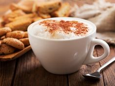
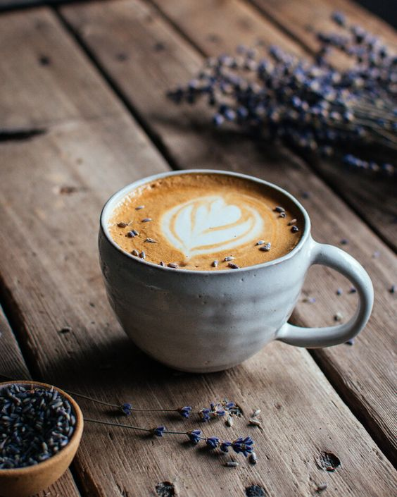

Capuchino
Capuchino là một loại cà phê gồm có cà phê và lớp bọt sữa (được đánh bông nằm ở phía trên), cùng với một ít bột ca cao hoặc bột quế được rắc lên bề mặt thức uống trước khi phục vụ.
Mua ngay


Latte
Latte là kiểu café sữa của Ý, được làm từ nguyên liệu chính là Espresso và sữa. Điều đặc biệt để tạo nên một ly Latte hấp dẫn đó chính là lớp bọt sữa được tạo hình nghệ thuật.
Mua ngayEspresso
Espresso là café được pha bằng máy, sử dụng nước nóng nén bởi áp suất cao qua lớp bột cà phê được xay mịn. Nước dùng để pha chế Espresso là nước tinh khiết, còn café dùng để pha chế theo phương pháp này cũng phải là café rang mộc, không tẩm ướp bất kỳ tạp chất nào.
Mua ngay